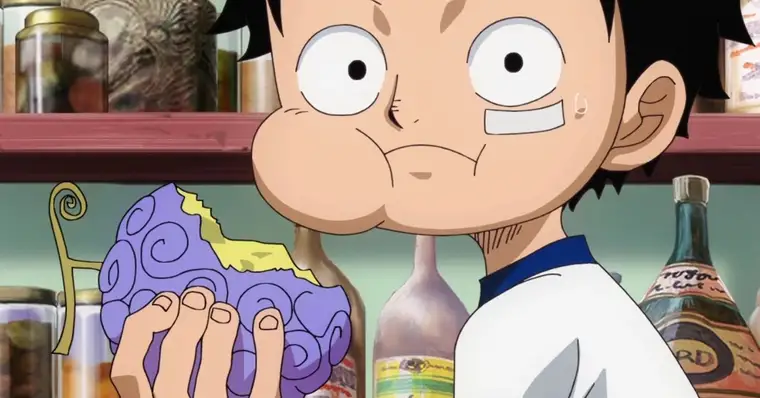
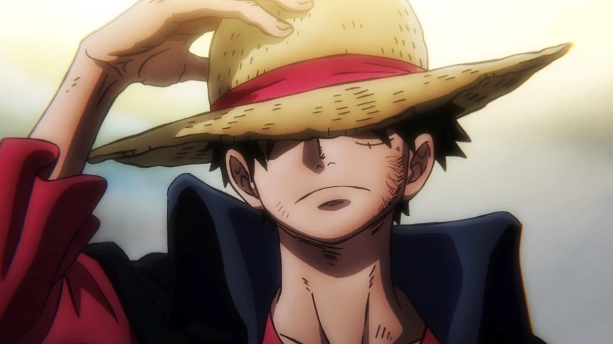
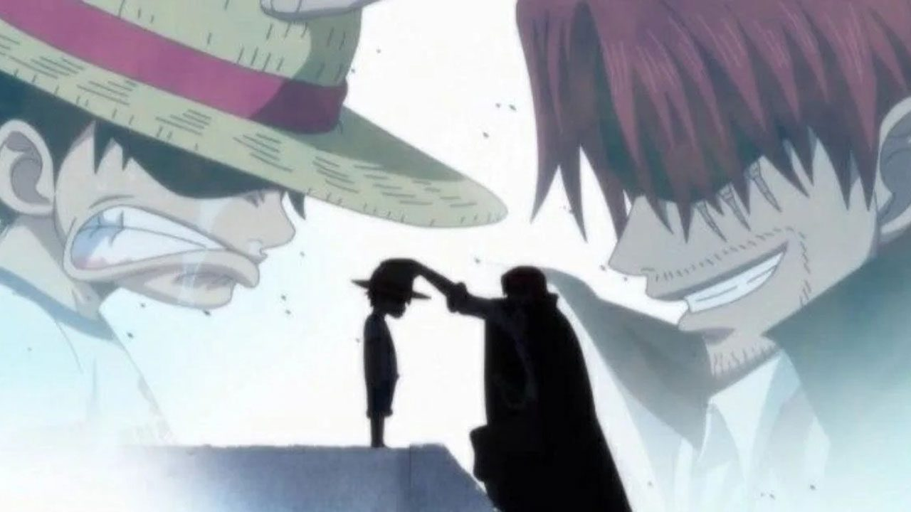
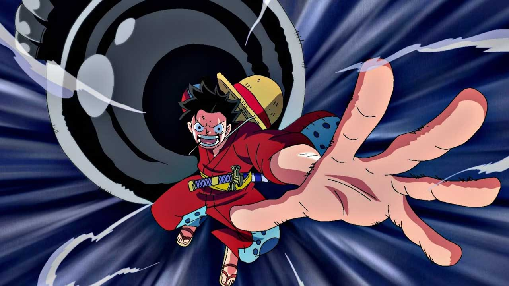
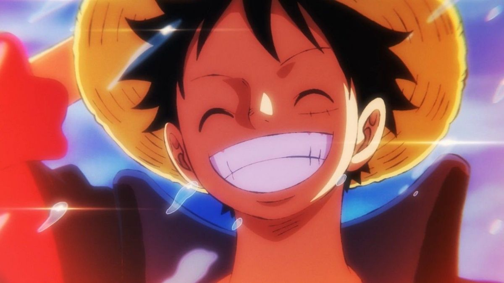
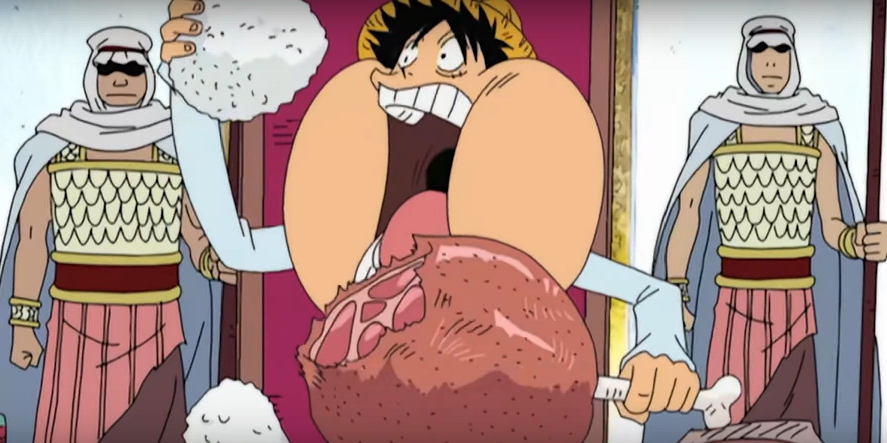
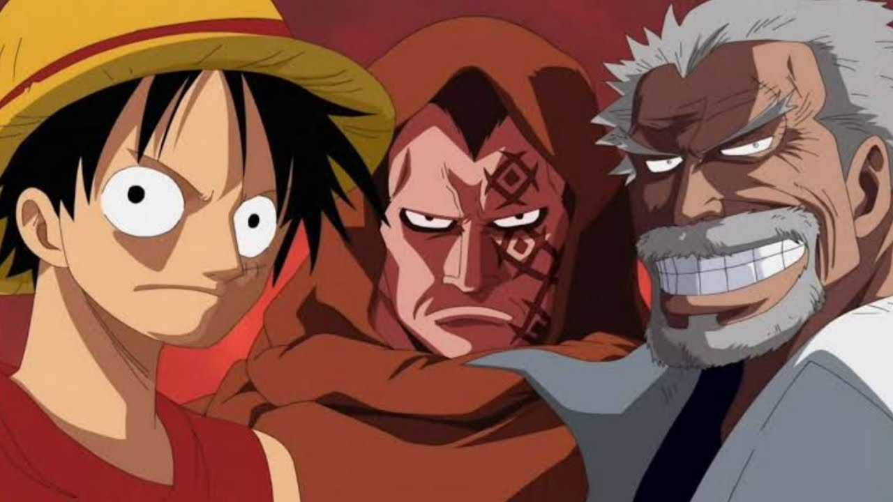

7 curiosidades sobre Monkey D. Luffy de One Piece
Por:Erik Paulino
-
Comedor de Frutas do Diabo:Luffy é um "usuário de Akuma no Mi" (fruta do diabo), tendo consumido a Gomu Gomu no Mi, que lhe concedeu o poder de esticar seu corpo como borracha. Isso o torna imune a balas e capaz de executar ataques poderosos.
 -
Sonho de se Tornar o Rei dos Piratas:Desde criança, o sonho de Luffy tem sido encontrar o lendário tesouro conhecido como One Piece e se tornar o Rei dos Piratas. Ele está determinado a alcançar esse objetivo, não importa os desafios que enfrentar.
 -
Marca Registrada - Chapéu de Palha:Luffy é reconhecido por seu icônico chapéu de palha, que recebeu de Shanks, um pirata poderoso que o inspirou a se tornar um pirata. Ele usa o chapéu como um símbolo de sua determinação e coragem.
 -
Habilidade de Haki:Além de sua habilidade de Akuma no Mi, Luffy também é hábil no uso de Haki, uma forma de energia espiritual. Ele é capaz de usar os três tipos de Haki: Kenbunshoku Haki (Observação), Busoshoku Haki (Armadura) e Haoshoku Haki (Conquistador).
 -
Líder Carismático:Luffy possui uma personalidade extrovertida e carismática que atrai seguidores leais. Ele tem uma capacidade natural de unir e inspirar as pessoas ao seu redor, formando uma equipe forte e coesa, os Piratas do Chapéu de Palha.
 -
Amor por Comida:Luffy tem um apetite insaciável e adora comer. Ele é especialmente conhecido por sua paixão por carne e sua capacidade de consumir grandes quantidades de comida em pouco tempo.
 -
Ligações de Família: Luffy tem uma relação familiar complicada. Seu pai é Monkey D. Dragon, o líder do Exército Revolucionário, e seu avô é Monkey D. Garp, um famoso vice-almirante da Marinha. Apesar dessas conexões, Luffy escolhe seguir seu próprio caminho como pirata.
